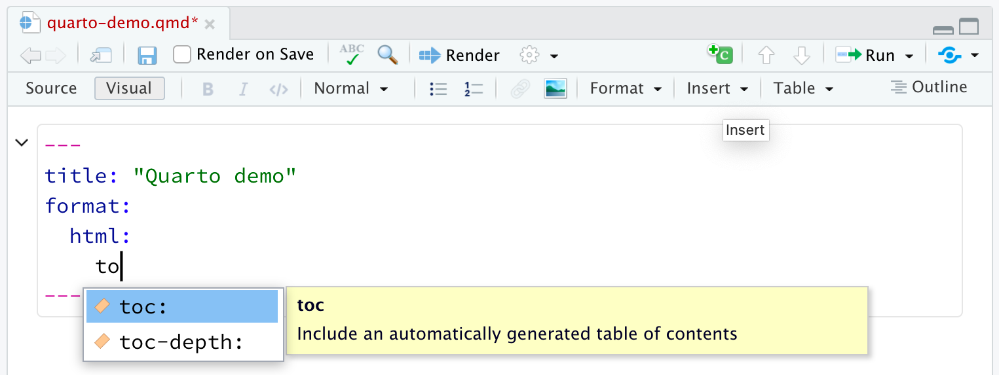

Usage: quarto
Version: 1.4.549
Description:
quarto CLI
Options:
-h, --help - Show this help.
-V, --version - Show the version number for this program.
Commands:
render [input] [args...] - Render files or projects to various document types.
preview [file] [args...] - Render and preview a document or website project.
serve [input] - Serve a Shiny interactive document.
create [type] [commands...] - Create a `Quarto` project or extension
use <type> [target] - Automate document or project setup tasks.
add <extension> - Add an extension to this folder or project
update [target...] - Updates an extension or global dependency.
remove [target...] - Removes an extension.
convert <input> - Convert documents to alternate representations.
pandoc [args...] - Run the version of Pandoc embedded within `Quarto`.
typst [args...] - Run the version of Typst embedded within `Quarto`.
run [script] [args...] - Run a TypeScript, R, Python, or Lua script.
install [target...] - Installs a global dependency (TinyTex or Chromium).
uninstall [tool] - Removes an extension.
tools - Display the status of `Quarto` installed dependencies
publish [provider] [path] - Publish a document or project to a provider.
check [target] - Verify correct functioning of `Quarto` installation.
help [command] - Show this help or the help of a sub-command. Literate programming
Quarto implements the concept of literate programming.
Literate programming is a programming paradigm introduced in 1984 by Donald Knuth in which a computer program is given as an explanation of how it works in a natural language, such as English, interspersed (embedded) with snippets of macros and traditional source code, from which compilable source code can be generated.
Initial concept
Modern implementation with Quarto

Multiple outputs
Quartoprovides a unified authoring framework for data science, combining your code, its results, and your prose.
Quartodocuments are fully reproducible, they automate the inclusion of the last versions of the results of an analysis, literally dozens of output formats are available: Web pages, PDFs, Word files, websites, books, and more.

The machinery

The machinery

Authoring Quarto documents
When working with R using Rstudio, Quarto comes pre-installed with recent versions of Rstudio.
To create a new document in RStudio, go to File > New File > Quarto Document:

Authoring Quarto documents
Source editor

Authoring Quarto documents
Use the Render button in the RStudio IDE to render the file and preview the output with a single click or keyboard shortcut (⌘ / ctrl ⇧K).

Automatically render on save by checking the Render on Save option:

Quarto files can also be rendered programmatically using the quarto command line:
or with the quarto R package:
Anatomy of a qmd file
It contains three types of content:
- An (optional) YAML header surrounded by —s.
- Text mixed with simple text formatting like ## heading, bolds and italics.
- Chunks of R code surrounded by ```{r}.
---
title: "Hello, Penguins"
format: html
execute:
echo: false
---
## Meet the penguins
The __penguins__ data contains size measurements for
penguins from three islands in the Palmer Archipelago,
Antarctica.
The _three_ species of penguins have quite distinct
distributions of physical dimensions (@fig-penguins).
#| label: fig-penguins
#| fig-cap: "Dimensions of penguins across three species."
#| warning: false
library(tidyverse, quietly = TRUE)
library(palmerpenguins)
penguins |>
ggplot(aes(x = flipper_length_mm, y = bill_length_mm)) +
geom_point(aes(color = species)) +
scale_color_manual(
values = c("darkorange", "purple", "cyan4")) +
theme_minimal()
YAML header
All format specific options are listed in the Quarto official documentation.
YAML Intelligence: YAML code completion is available for project files, YAML front matter, and executable cell options:

If you have incorrect YAML it will also be highlighted when documents are saved:

Markdown
Quarto is based on Pandoc and uses its variation of markdown as its underlying document syntax. Pandoc markdown is an extended and slightly revised version of John Gruber’s Markdown syntax.
Markdown is a plain text format that is designed to be easy to write, and, even more importantly, easy to read:
A Markdown-formatted document should be publishable as-is, as plain text, without looking like it’s been marked up with tags or formatting instructions. – John Gruber

The following two slides provide examples of the most basic markdown syntax. See the Quarto official website for more in-depth documentation.
Markdown
### Links and images
<https://rdatatoolbox.github.io/chapters/course-compendium.html>
[rdatatoolbox is there](https://rdatatoolbox.github.io/)
{fig-alt="rdatatoolbox logo" width="20%"}
### Tables
| First Header | Second Header |
|--------------|---------------|
| Content Cell | Content Cell |
| Content Cell | Content Cell |Links and images
https://rdatatoolbox.github.io/chapters/course-compendium.html

Tables
| First Header | Second Header |
|---|---|
| Content Cell | Content Cell |
| Content Cell | Content Cell |
Markdown
Rstudio’s visual editor toolbar includes buttons for the most commonly used formatting commands:

Markdown
Additional commands are available on the Format, Insert, and Table menus:
| Format | Insert | Table |
|---|---|---|
 |
 |
 |
Markdown
Rstudio’s visual editor toolbar includes buttons for the most commonly used formatting commands:
Check out the Quarto official documentation to learn more about visual markdown editing:
Technical Writing covers features commonly used in scientific and technical writing, including citations, cross-references, footnotes, equations, embedded code, and LaTeX.
Content Editing provides more depth on visual editor support for tables, lists, pandoc attributes, CSS styles, comments, symbols/emojis, etc.
Shortcuts & Options documents the two types of shortcuts you can use with the editor: standard keyboard shortcuts and markdown shortcuts and describes various options for configuring the editor.
Markdown Output describes how the visual editor parses and writes markdown and describes various ways you can customize this.
A complete guide to Quarto authoring is available in the official documentation.
Computations (using R)
Code blocks that use braces around the language name (e.g. ```{r}) are executable, and will be run by Quarto during render. Chunk options (optional), in YAML style, identified by #| at the beginning of the line are used to set chunk-specific meta-data and behaviours.
Going back to the penguins example:
The _three_ species of penguins have quite distinct
distributions of physical dimensions (@fig-penguins).
````{r}
#| label: fig-penguins
#| fig-cap: "Dimensions of penguins across three species."
#| warning: false
library(tidyverse, quietly = TRUE)
library(palmerpenguins)
penguins |>
ggplot(aes(x = flipper_length_mm, y = bill_length_mm)) +
geom_point(aes(color = species)) +
scale_color_manual(
values = c("darkorange", "purple", "cyan4")) +
theme_minimal()
````- A chunk label (“fig-penguins”) has been defined, it allows referencing (and auto-numbering) the plot produced by the code as a figure anywhere in the text (
@fig-penguins).
- A figure caption has been defined and is used in the rendered output.
- Warnings have been disabled and are discarded from the rendered output.
Computations (using R)


In addition to rendering the complete document to view the results of code chunks you can also run each code chunk interactively in the RStudio editor by clicking the icon or keyboard shortcut (Cmd/Ctrl + Shift + Enter).
RStudio executes the code and displays the results either inline within your file or in the Console, depending on your preference.
Computations (figures)
Put two plots side by side:

Cross references (computations)
Figures: